For the two images, I have chosen me and my friend Jash. These images are initially resized to 1/5 their dimensions to control the size. Then, I have created a correspondence using the tool provided on the project spec. These points are then loaded in and the midway points are calculated, on which the Delaunay triangulation function is applied. From the image shown below, you can see that I have tried to match feature to feature, focusing on eyes, lips, chin and also the four ends of the image to give it a border.
 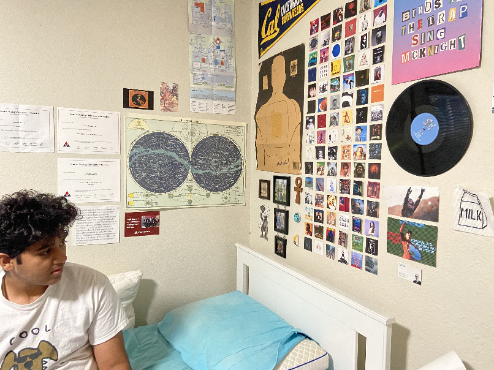
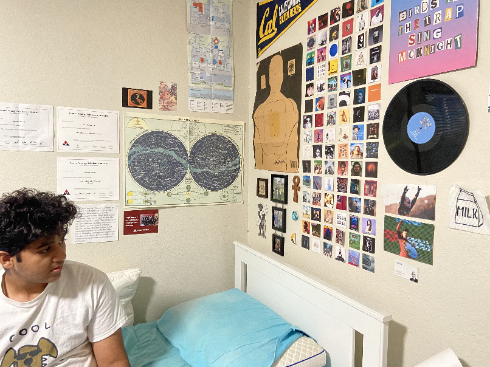

This part defines the compute_affine and inversewarp functions, including others. Both the resized images are used, as well as the triangulations, to create the mid-way face. The affine function translates the images to the midway points found in the triangulation, and then an inverse warp is called on the same. Then, the images are cross dissolved to give the right colours. All the results are displayed below, including the warped images + the midway face.
To make the morph sequence, the code generates frames by varying warp_frac and dissolve_frac parameters from 0 to 1. The midway face would have values of 0.5 for both parameters. Frames are generated and appended to the "frames" array with the same method as the midway face. The gif produced contains 45 frames, with the first and last frames being the original images 1 and 2 respectively

As described in the project spec, the hybrid images were created by low-pass filtering one image and high-pass filtering the second image and then combining the two. The two examples and one failed example are shown below. The hyperparameter values for the Gaussian filter were set through experimentation and qualitative assesment.
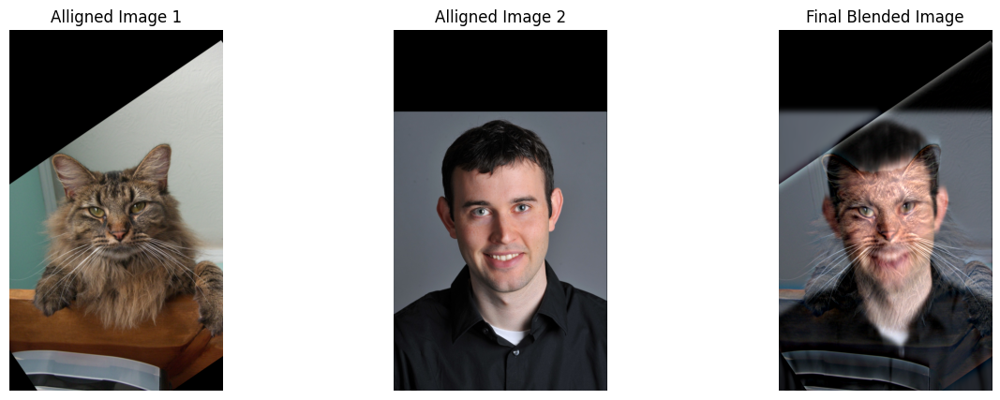 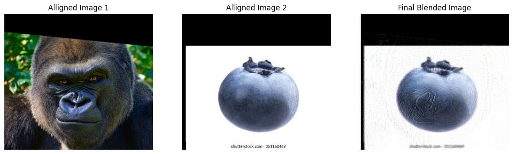 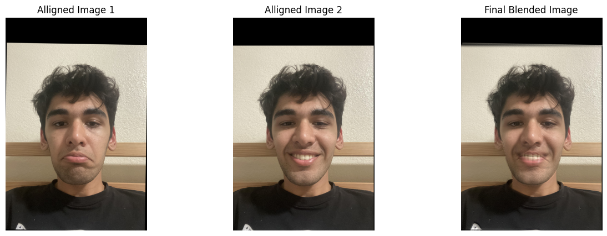The Fourier output images are calculated as shown in the spec for the Cat and Derek image combination


 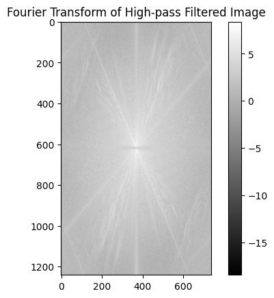
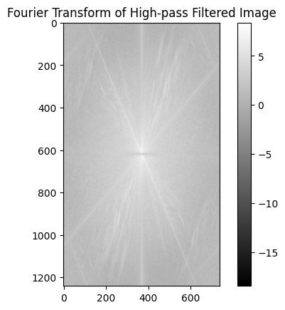

The Gaussian stack is made by consistently applying the Gaussian blur on the original image. The Laplacian stack on the other hand, is created by subtracting consecutive iamges in the Gaussian stack, highlighting/extracting all the high frequancies from the image. The stacks for the orange and apple are shown below.
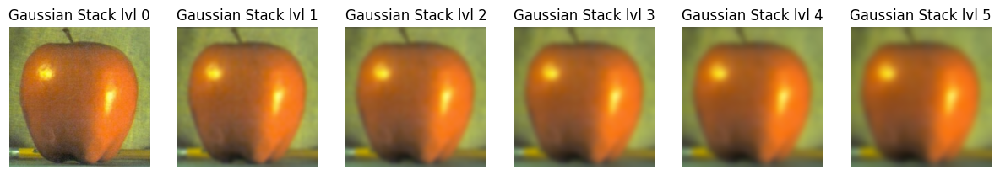 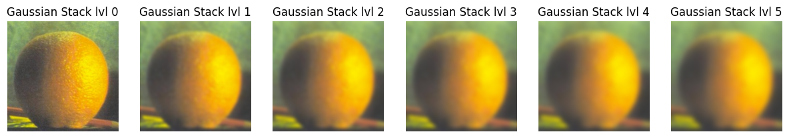
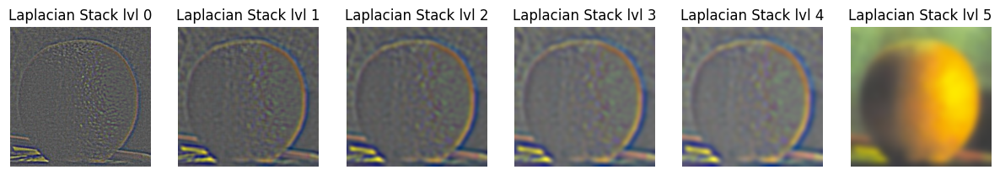
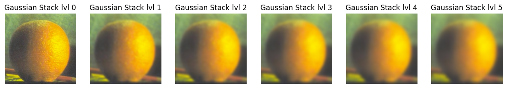
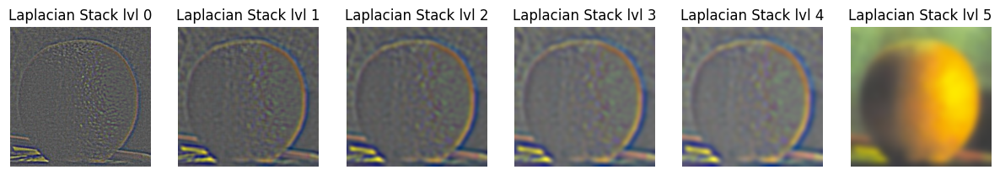
From the Gaussian and Laplacian stacks, we can create a mask that can be used to merge the two images. For the orapple, the mask is just one side/half of the image, but I have created a circular mask for one of the examples. For process for blending, I created a Laplacian stack with the merged images and summed over the whole stack, including the last item so that all the low and high frequencies are added up to create the final image.

Some other examples are shown below. The New York skyline day and night merged image is made with the rectangular/vertical split mask, but the last example shown is made with a circular mask restricted by a radius parameter.


The most important thing that I learnt from this project is that image processing requires a lot of trial and error and deciding what looks best qualitatively. I have taken some inspiration from ChatGPT and pretrained LLM's to create the structure for some parts of the website.
Back to Main Page